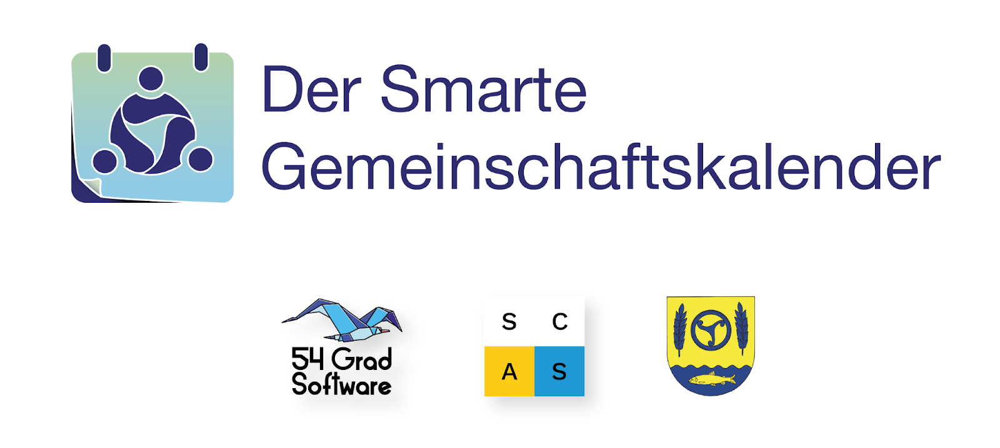

Der Smarte Gemeinschaftskalender
Der Smarte Gemeinschaftskalender: Was steckt dahinter?
Der smarte Gemeinschaftskalender ist eine Open-Source-Lösung, die darauf abzielt, die Planung und Kommunikation von Veranstaltungen in Gemeinden und Organisationen zu optimieren. Verschiedene Automatisierungen unterstützen Veranstalter*innen bei der Verbreitung ihrer Angebote. Gleichzeitig gewährleistet die Integration unterschiedlicher Kommunikationskanäle – von E-Mail und SMS bis hin zu analogen Briefen –, dass alle interessierten Bürger*innen, unabhängig von ihren technischen Fähigkeiten, barrierefrei und aktuell über relevante Veranstaltungen informiert werden. Damit trägt unser Projekt zur gesellschaftlichen Teilhabe für alle Menschen bei und verfolgt das Ziel der Inklusion und gelebter Diversität. Als offene Lösung ermöglicht der Kalender eine dezentrale Vernetzung von Gemeinden. Das bedeutet: Veranstaltungsdaten können nicht nur lokal, sondern auch (über-)regional geteilt werden.
Unsere Vision ist ein Netzwerk, durch das Bürger*innen einen umfassenden Überblick aktueller Veranstaltungen erhalten – über Gemeindegrenzen hinweg. Als positiver Nebeneffekt profitiert der regionale Tourismus und es wird ein Raum geschaffen, der zur Kollaboration zwischen Gemeinden anregt.
Der Entwicklungsprozess
Gemeinsam haben wir – das Smart City Amt Süderbrarup und die 54 Grad Software GmbH – in enger Zusammenarbeit unser innovatives Kalender-Konzept entwickelt. Gekrönt wurde unsere erfolgreiche Kooperation mit der Förderzusage für unseren smarten Gemeinschaftskalender durch das Landesprogramm Offene Innovation. Auch die weiteren Entwicklungsmeilensteine werden wir gemeinsam als Team erarbeiten: online und vor Ort in Süderbrarup.
Jetzt wollen wir keine Zeit verlieren! Bereits mitte 2025 soll die erste Instanz des smarten Gemeinschaftskalenders im Amt Süderbrarup vollständig implementiert sein. In den kommenden Wochen schaffen wir die technischen Grundlagen, sodass ab Dezember 2024 an den erweiterten Funktionen und Integrationen gearbeitet werden kann. Auch ein Werbemittelgenerator ist Teil des Projekts, um Veranstalter*innen die Erstellung von Werbematerialien zu erleichtern.